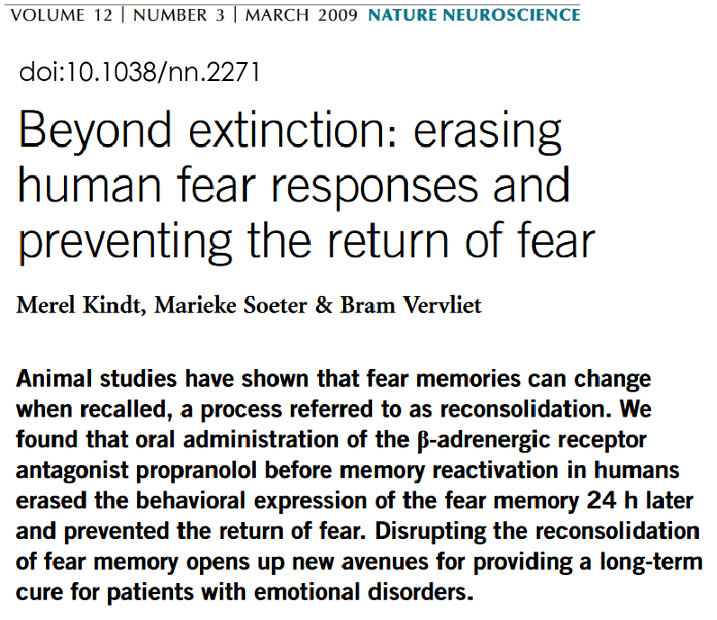
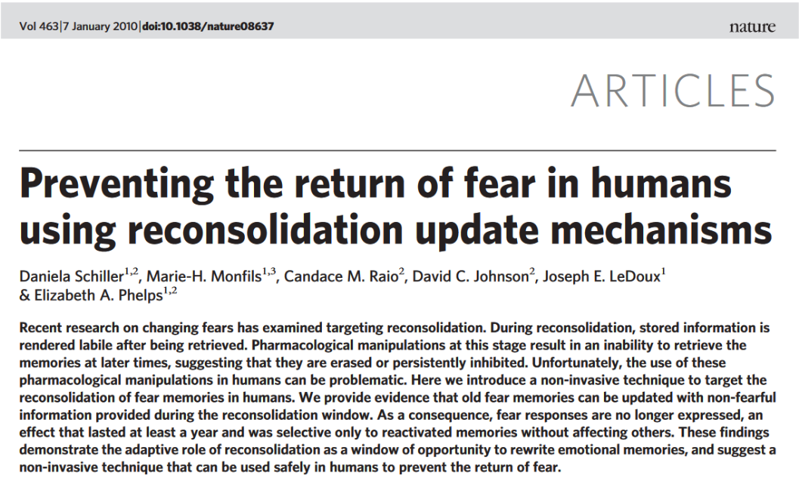

Learning
Enduring change in response or behavior that occurs as a result of experience. There are two broad classifications of learning:
- Non-associative learning
- Associative learning
- Instrumental conditioning
- Model free and Model base learning
 
Neural bases of averse conditioning acquisition
Double dissociation between patients who have amygdala lesions and patients with hippocampal lesions. The amygdala is necessary for the implicit expression of
conditioning. The hippocampus is necessary for the explicit or declarative expression of conditioning